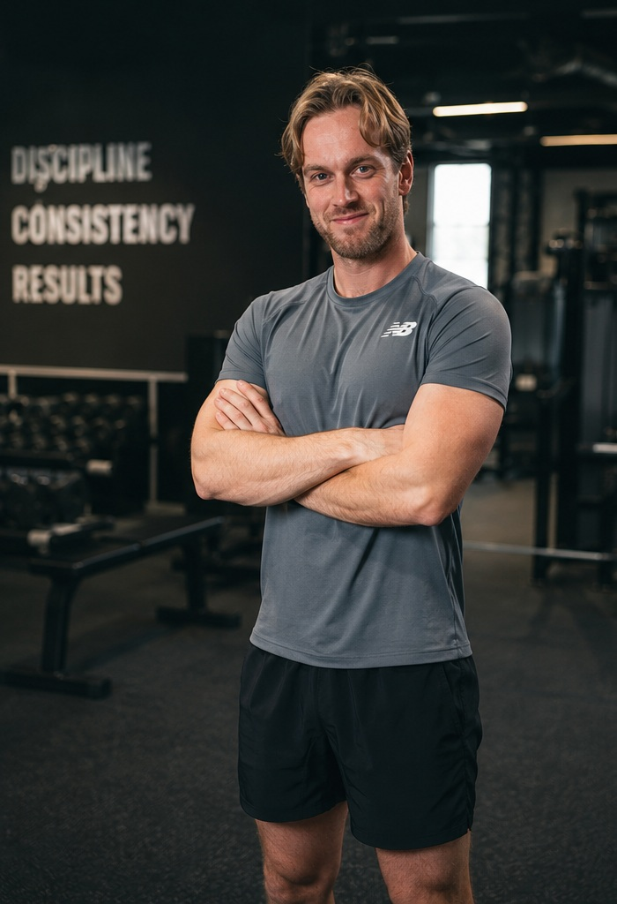
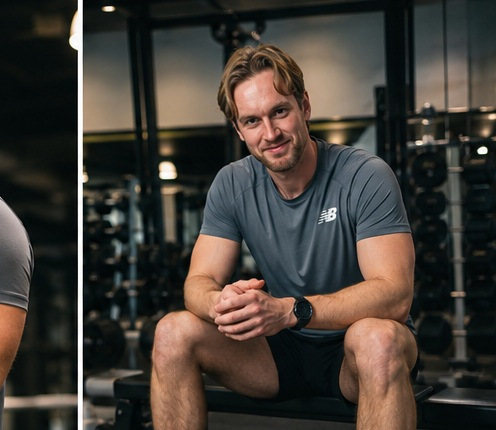
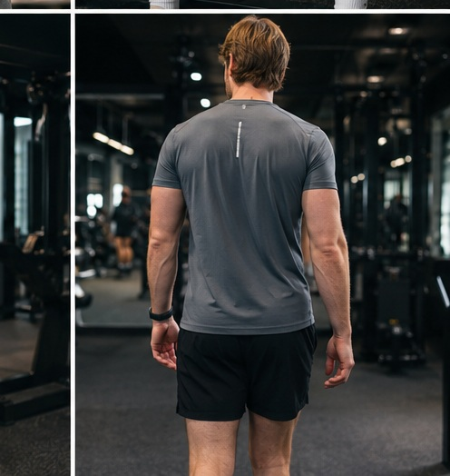

Mount Royal University
Currently completing the Personal Fitness Trainer Diploma program.
Personal Fitness Trainer ePortfolio
Performance-focused coaching for new runners and individuals seeking long-term fitness, health, and well-being.

About Me
Born and raised in Calgary, Alberta, I have been involved in sports and physical activity for as long as I can remember. Growing up, I participated in hockey, basketball, soccer, and skiing, with hockey being my first passion. Today, my athletic focus has shifted toward endurance running, where I have achieved a marathon personal best of 2:59.
While fitness has always been part of my life, my journey has not been perfect. Like many people, I lost touch with fitness during my early twenties. When I returned to consistent exercise, I experienced firsthand the profound impact it had on both my physical and mental health. Running became more than a workout; it became an outlet, a source of clarity, and a way to challenge myself while maintaining balance in everyday life.
As a coach, I want to help others discover this same gift. I believe fitness should support a better life, not consume it.

Education & Certifications
Currently completing the Personal Fitness Trainer Diploma program.
April 2027.
First Aid and CPR certified. Seeking future certification through the Canadian Society for Exercise Physiology (CSEP).
Industry Experience
I am completing my practicum experience at Zeal Performance in Calgary, Alberta. This placement provides an opportunity to learn within a professional fitness environment and continue developing the communication, observation, and coaching skills required in the fitness industry.
Through this experience, I am building a stronger understanding of client support, facility expectations, program design, exercise instruction, and the standards required of a professional personal trainer.

Who I Want To Work With
My primary focus is helping new runners and individuals who want to improve their fitness, health, and overall well-being over the long term. I understand that beginning a fitness journey can feel overwhelming, especially for people who are unsure where to start or who have struggled with consistency in the past.
I am especially passionate about working with new runners because running has become one of the most rewarding parts of my own life. When approached safely and progressively, running can build confidence, resilience, physical health, and mental clarity.
Rather than focusing on quick fixes, I want to help people create realistic routines that fit their lifestyle and support lifelong wellness.
Coaching Philosophy
Results are built through small actions repeated over time. Showing up consistently will always outperform short periods of perfection.
Fitness is one of the greatest forms of self-respect. Making time for health is an investment in every other area of life.
No two individuals are the same. Training should reflect each person's goals, experience, strengths, and challenges.
What Endurance Training Has Taught Me
Achieving a marathon time under three hours did not happen because of one perfect workout or a single moment of motivation. It came from showing up consistently, trusting the process, and continuing to move forward when progress felt slow.
That experience shapes the way I want to coach. Fitness is not about perfection; it is about building habits, developing confidence, and learning to keep promises to yourself.
Staying Current
To stay current in the fitness industry, I plan to continue pursuing professional certifications, beginning with CSEP certification. I also intend to keep learning through continuing education courses, mentorship from experienced fitness professionals, evidence-based resources, and ongoing practical experience in the field.
Professional Contact
For this ePortfolio, professional contact can be directed to:
coachliamfitness@gmail.comCalgary, Alberta · No professional social media accounts currently listed.